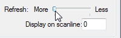

Окно открывается в эмуляторе FCEUX через Debug -> PPU Viewer (или горячей клавишей).
Содержимое окна отображает текущие тайлы и палитру из видеопамяти PPU Memory. Данные обновляются 1 раз за кадр. Конкретное время в пределах кадра указывается в опции Display on scanline.
Тайлы и палитра
Тайлы
Окно поделено на 2 части. Левая часть отображает тайлы из адресов $0000-$0FFF, а правая - $1000-$1FFF. Одна из них хранит тайлы фона, а другая - тайлы для спрайтов. Это определяется регистром видеопроцессора $2000.
При наведении курсора на тайл, внизу окна рядом со словом Tile показывается номер тайла HEX-числом.

Палитра
Верхняя строчка отображает палитру для фона по адресам $3F00-$3F0F, нижняя - палитру для спрайтов по адресам $3F10-$3F1F. В каждой строчке по 4 набора цвета, которые используются для окраски фона/спрайтов.
При наведении курсора на палитру, рядом со словом Palettes выводится байт, находящийся по данному адресу.

Если кликать правой кнопкой на левой/правой части окна с тайлами, эти тайлы будут отображаться с соответствующим набором цвета. Набор выбирается по порядку, по умолчанию используется первый набор.

Всего 8 наборов + 1 предустановленный черно-белый, который может помочь посмотреть тайлы, когда в игре выбирается черная палитра и затемняется экран.
Прочие функции окна
Sprites 8x16 mode
Некоторые игры, например Battle City, выводят на экран спрайты размером 8x16, а не 8x8. Это определяется регистром видеопроцессора $2000. При переключении опции тайлы в окне будут отображены в соответствующем режиме.

Если ты не можешь разобрать тайлы, которые видишь в окне, попробуй включить эту опцию.
Code/Data Logger
При работе с этим окном будут доступны следующие 2 опции.
Mask unused graphics
Отображает тайлы, которые были использованы игрой на протяжении работы окна Code/Data Logger. Если точнее, то неиспользуемые тайлы будут затемнены, а подсветка используемых остается без изменений.

Если окно Code/Data Logger в данный момент закрыто или неактивно, включение галочки ни на что не влияет.
Invert the mask
Опция становится доступной для выбора только при включенной опции Mask unused graphics. Инвертирует отображение использованных тайлов, то есть с этой опцией подсвечиваются те тайлы, которые еще не были использованы.

Refresh
Ползунок позволяет регулировать частоту обновления окна от частого (More) до редкого (Less). Помогает снизить нагрузку на слабом компьютере.

Display on scanline
Некоторые игры могут на протяжении кадра подключать другие банки с тайлами на какой-то определенной линии экрана. Обычно это делается для того, чтобы отобразить статусбар вверху/внизу экрана новыми тайлами, или чтобы просто иметь возможность использовать большее количество тайлов для отрисовки фона/спрайтов.
Если правильно подобрать номер сканлинии, можно посмотреть какую графику игра будет подключать. В большинстве случаев подойдет число 200.
В примере игра переключает первые 64 тайла, которыми отрисовывается статусбар.